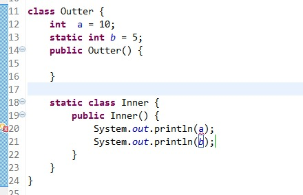

一.内部クラスの基礎
Java では、あるクラスを別のクラスの内部またはメソッドの内部に定義することができ、そのようなクラスを内部クラスと呼びます。広義の内部クラスには、一般的に以下の4種類があります。メンバー内部クラス、ローカル内部クラス、匿名内部クラス、静的内部クラスです。まずはこの4種類の内部クラスの使い方を見ていきましょう。
1.メンバー内部クラス
メンバー内部クラスは最も一般的な内部クラスで、別のクラスの内部に位置するように定義されます。次のような形式になります：
class Circle {
double radius = 0;
public Circle(double radius) {
this.radius = radius;
}
class Draw { //内部类
public void drawSahpe() {
System.out.println("drawshape");
}
}
}
このように、クラスDrawはクラスCircleのメンバーのように見えます。Circleは外部クラスと呼ばれます。メンバー内部クラスは、外部クラスのすべてのメンバー属性とメンバーメソッド（privateメンバーと静的メンバーを含む）に無条件にアクセスできます。
class Circle {
private double radius = 0;
public static int count =1;
public Circle(double radius) {
this.radius = radius;
}
class Draw { //内部类
public void drawSahpe() {
System.out.println(radius); //外部类的private成员
System.out.println(count); //外部类的静态成员
}
}
}
ただし、メンバー内部クラスが外部クラスと同じ名前のメンバー変数またはメソッドを持つ場合、隠蔽が発生します。つまり、デフォルトではメンバー内部クラスのメンバーにアクセスします。外部クラスの同名メンバーにアクセスするには、次の形式でアクセスする必要があります：
外部类.this.成员变量 外部类.this.成员方法
メンバー内部クラスは外部クラスのメンバーに無条件にアクセスできますが、外部クラスがメンバー内部クラスのメンバーにアクセスするのはそれほど自由にはいきません。外部クラス内でメンバー内部クラスのメンバーにアクセスするには、まずメンバー内部クラスのオブジェクトを作成し、そのオブジェクトを指す参照を介してアクセスする必要があります：
class Circle {
private double radius = 0;
public Circle(double radius) {
this.radius = radius;
getDrawInstance().drawSahpe(); //必须先创建成员内部类的对象，再进行访问
}
private Draw getDrawInstance() {
return new Draw();
}
class Draw { //内部类
public void drawSahpe() {
System.out.println(radius); //外部类的private成员
}
}
}メンバー内部クラスは外部クラスに依存して存在します。つまり、メンバー内部クラスのオブジェクトを作成するには、外部クラスのオブジェクトが存在することが前提です。メンバー内部クラスのオブジェクトを作成する一般的な方法は次のとおりです：
public class Test {
public static void main(String[] args) {
//第一种方式：
Outter outter = new Outter();
Outter.Inner inner = outter.new Inner(); //必须通过Outter对象来创建
//第二种方式：
Outter.Inner inner1 = outter.getInnerInstance();
}
}
class Outter {
private Inner inner = null;
public Outter() {
}
public Inner getInnerInstance() {
if(inner == null)
inner = new Inner();
return inner;
}
class Inner {
public Inner() {
}
}
}
内部クラスは、private アクセス権限、protected アクセス権限、public アクセス権限、およびパッケージアクセス権限を持つことができます。例えば上記の例で、メンバー内部クラス Inner が private で修飾されている場合は、外部クラスの内部からのみアクセスできます。public で修飾されている場合は、どこからでもアクセスできます。protected で修飾されている場合は、同じパッケージ内、または外部クラスを継承した場合にのみアクセスできます。デフォルトのアクセス権限の場合は、同じパッケージ内からのみアクセスできます。この点は外部クラスとは少し異なります。外部クラスは public とパッケージアクセスの2つの権限でのみ修飾できます。個人的には、メンバー内部クラスは外部クラスのメンバーのように見えるため、クラスのメンバーと同じように複数の権限修飾を持つことができると理解しています。
2.ローカル内部クラス
ローカル内部クラスは、メソッド内またはスコープ内で定義されるクラスです。メンバー内部クラスとの違いは、ローカル内部クラスへのアクセスがメソッド内またはそのスコープ内に限定されることです。
class People{
public People() {
}
}
class Man{
public Man(){
}
public People getWoman(){
class Woman extends People{ //局部内部类
int age =0;
}
return new Woman();
}
} 注意: ローカル内部クラスはメソッド内のローカル変数のようなもので、public、protected、private、および static 修飾子を持つことはできません。
3.匿名内部クラス
匿名内部クラスは、普段コードを書くときに最もよく使うものではないでしょうか。イベントリスナーのコードを書くときに匿名内部クラスを使うと便利なだけでなく、コードの保守も容易になります。次のコードは Android のイベントリスナーコードです：
scan_bt.setOnClickListener(new OnClickListener() {
@Override
public void onClick(View v) {
// TODO Auto-generated method stub
}
});
history_bt.setOnClickListener(new OnClickListener() {
@Override
public void onClick(View v) {
// TODO Auto-generated method stub
}
});このコードは2つのボタンにリスナーを設定しており、ここで匿名内部クラスが使用されています。このコードの中の：
new OnClickListener() {
@Override
public void onClick(View v) {
// TODO Auto-generated method stub
}
}これは匿名内部クラスの使用です。コードではボタンにリスナーオブジェクトを設定する必要があります。匿名内部クラスを使用すると、親クラスまたはインターフェースのメソッドを実装しながら、対応するオブジェクトを同時に生成できます。ただし、このように使用するには、親クラスまたはインターフェースが先に存在している必要があります。もちろん、次のような書き方も可能で、上記の匿名内部クラスを使用した場合と同じ効果が得られます。
private void setListener()
{
scan_bt.setOnClickListener(new Listener1());
history_bt.setOnClickListener(new Listener2());
}
class Listener1 implements View.OnClickListener{
@Override
public void onClick(View v) {
// TODO Auto-generated method stub
}
}
class Listener2 implements View.OnClickListener{
@Override
public void onClick(View v) {
// TODO Auto-generated method stub
}
}
この書き方でも同じ効果は得られますが、冗長で保守も難しいため、通常は匿名内部クラスを使ってイベントリスナーのコードを書きます。同様に、匿名内部クラスもアクセス修飾子や static 修飾子を持つことはできません。
匿名内部クラスは、コンストラクタを持たない唯一のクラスです。コンストラクタがないため、匿名内部クラスの使用範囲は非常に限られており、ほとんどの匿名内部クラスはインターフェースのコールバックに使用されます。匿名内部クラスはコンパイル時にシステムによって自動的に Outter$1.class という名前が付けられます。一般的に、匿名内部クラスは他のクラスの継承やインターフェースの実装に使用され、追加のメソッドを必要とせず、継承したメソッドの実装やオーバーライドのみを行います。
4.静的内部クラス
静的内部クラスも別のクラスの中に定義されるクラスですが、クラスの前にキーワード static が付くだけです。静的内部クラスは外部クラスに依存する必要がありません。この点はクラスの静的メンバー属性に似ています。また、外部クラスの非 static メンバー変数やメソッドを使用することはできません。これは理解しやすいでしょう。外部クラスのオブジェクトが存在しない状態で静的内部クラスのオブジェクトを作成できるため、外部クラスの非 static メンバーへのアクセスを許可すると矛盾が生じるからです。外部クラスの非 static メンバーは具体的なオブジェクトに依存する必要があるからです。
public class Test {
public static void main(String[] args) {
Outter.Inner inner = new Outter.Inner();
}
}
class Outter {
public Outter() {
}
static class Inner {
public Inner() {
}
}
}

二.内部クラスを深く理解する
1.なぜメンバー内部クラスは外部クラスのメンバーに無条件にアクセスできるのか？
これまでに、メンバー内部クラスが外部クラスのメンバーに無条件にアクセスできることを説明しましたが、具体的にはどのように実現されているのでしょうか。次に、バイトコードファイルを逆コンパイルして確認してみましょう。実際には、コンパイラはコンパイル時にメンバー内部クラスを単独で1つのバイトコードファイルにコンパイルします。以下は Outter.java のコードです：
public class Outter {
private Inner inner = null;
public Outter() {
}
public Inner getInnerInstance() {
if(inner == null)
inner = new Inner();
return inner;
}
protected class Inner {
public Inner() {
}
}
}コンパイル後、2つのバイトコードファイルが生成されます：

Outter$Inner.class ファイルを逆コンパイルすると、次の情報が得られます：
E:\Workspace\Test\bin\com\cxh\test2>javap -v Outter$Inner
Compiled from "Outter.java"
public class com.cxh.test2.Outter$Inner extends java.lang.Object
SourceFile: "Outter.java"
InnerClass:
#24= #1 of #22; //Inner=class com/cxh/test2/Outter$Inner of class com/cxh/tes
t2/Outter
minor version: 0
major version: 50
Constant pool:
const #1 = class #2; // com/cxh/test2/Outter$Inner
const #2 = Asciz com/cxh/test2/Outter$Inner;
const #3 = class #4; // java/lang/Object
const #4 = Asciz java/lang/Object;
const #5 = Asciz this$0;
const #6 = Asciz Lcom/cxh/test2/Outter;;
const #7 = Asciz <init>;
const #8 = Asciz (Lcom/cxh/test2/Outter;)V;
const #9 = Asciz Code;
const #10 = Field #1.#11; // com/cxh/test2/Outter$Inner.this$0:Lcom/cxh/t
est2/Outter;
const #11 = NameAndType #5:#6;// this$0:Lcom/cxh/test2/Outter;
const #12 = Method #3.#13; // java/lang/Object."<init>":()V
const #13 = NameAndType #7:#14;// "<init>":()V
const #14 = Asciz ()V;
const #15 = Asciz LineNumberTable;
const #16 = Asciz LocalVariableTable;
const #17 = Asciz this;
const #18 = Asciz Lcom/cxh/test2/Outter$Inner;;
const #19 = Asciz SourceFile;
const #20 = Asciz Outter.java;
const #21 = Asciz InnerClasses;
const #22 = class #23; // com/cxh/test2/Outter
const #23 = Asciz com/cxh/test2/Outter;
const #24 = Asciz Inner;
{
final com.cxh.test2.Outter this$0;
public com.cxh.test2.Outter$Inner(com.cxh.test2.Outter);
Code:
Stack=2, Locals=2, Args_size=2
0: aload_0
1: aload_1
2: putfield #10; //Field this$0:Lcom/cxh/test2/Outter;
5: aload_0
6: invokespecial #12; //Method java/lang/Object."<init>":()V
9: return
LineNumberTable:
line 16: 0
line 18: 9
LocalVariableTable:
Start Length Slot Name Signature
0 10 0 this Lcom/cxh/test2/Outter$Inner;
}11行目から35行目が定数プールの内容です。次に38行目の内容を順に説明します：
final com.cxh.test2.Outter this$0;
この行は外部クラスのオブジェクトを指すポインタです。ここまで見ると、皆さんもおそらく納得できるでしょう。つまり、コンパイラはメンバー内部クラスに外部クラスのオブジェクトを指す参照をデフォルトで追加します。では、この参照はどのように初期値が代入されるのでしょうか。次に内部クラスのコンストラクタを見てみましょう：
public com.cxh.test2.Outter$Inner(com.cxh.test2.Outter);
ここからわかるように、定義した内部クラスのコンストラクタは引数なしのコンストラクタですが、コンパイラはデフォルトで1つのパラメータを追加します。そのパラメータの型は外部クラスのオブジェクトを指す参照です。そのため、メンバー内部クラス内の Outter this&0 ポインタは外部クラスのオブジェクトを指し、メンバー内部クラス内で外部クラスのメンバーに自由にアクセスできます。ここから、メンバー内部クラスが外部クラスに依存していることも間接的にわかります。外部クラスのオブジェクトを作成していなければ、Outter this&0 参照に初期値を代入できず、メンバー内部クラスのオブジェクトも作成できないのです。
2.なぜローカル内部クラスと匿名内部クラスはローカルの final 変数にしかアクセスできないのか？
この問題は多くの人を悩ませたことがあるでしょう。この問題を議論する前に、次のコードを見てください：
public class Test {
public static void main(String[] args) {
}
public void test(final int b) {
final int a = 10;
new Thread(){
public void run() {
System.out.println(a);
System.out.println(b);
};
}.start();
}
} このコードは2つのクラスファイル、Test.class と Test1.class にコンパイルされます。デフォルトでは、コンパイラは匿名内部クラスとローカル内部クラスに次のような名前を付けます：Outterx.class（x は正の整数）。

上の図からわかるように、test メソッド内の匿名内部クラスの名前は Test$1 と付けられています。
上記のコードでは、変数 a と b の前のいずれかの final を削除すると、このコードはコンパイルできません。まず、次のような問題を考えてみましょう：
test メソッドの実行が完了すると、変数 a のライフサイクルは終了しますが、その時点で Thread オブジェクトのライフサイクルはまだ終了していない可能性が高いです。そのため、Thread の run メソッド内で変数 a に引き続きアクセスすることは不可能になります。しかし、このような効果を実現する必要がある場合、どうすればよいでしょうか。Java はコピーという手段を用いてこの問題を解決しています。このコードのバイトコードを逆コンパイルすると、次の内容が得られます：

run メソッドの中に1つの命令があるのがわかります：
bipush 10
この命令は、オペランド10をスタックにプッシュすることを示しており、ローカル変数を使用していることを表します。この処理はコンパイル中にコンパイラによってデフォルトで行われます。この変数の値がコンパイル中に確定できる場合、コンパイラはデフォルトで匿名内部クラス（ローカル内部クラス）の定数プールに同じ内容のリテラルを追加するか、対応するバイトコードを実行バイトコードに直接埋め込みます。これにより、匿名内部クラスが使用する変数は別のローカル変数であり、値がメソッド内のローカル変数の値と等しいだけなので、メソッド内のローカル変数とは完全に独立しています。
次に別の例を見てみましょう：
public class Test {
public static void main(String[] args) {
}
public void test(final int a) {
new Thread(){
public void run() {
System.out.println(a);
};
}.start();
}
}逆コンパイルすると、次の結果が得られます：

匿名内部クラス Test$1 のコンストラクタには2つのパラメータがあることがわかります。1つは外部クラスのオブジェクトを指す参照、もう1つは int 型の変数です。明らかに、これは test メソッド内の仮引数 a をパラメータとして渡し、匿名内部クラス内のコピー（変数 a のコピー）に値を代入して初期化しています。
つまり、ローカル変数の値がコンパイル中に確定できる場合は、匿名内部クラス内に直接コピーを作成します。ローカル変数の値がコンパイル中に確定できない場合は、コンストラクタのパラメータ渡しによってコピーの初期化代入を行います。
上記からわかるように、run メソッド内でアクセスする変数 a は、test メソッド内のローカル変数 a とはまったく別物です。これにより、前述のライフサイクルの不一致の問題は解決されます。しかし、新しい問題が発生します。run メソッド内でアクセスする変数 a と test メソッド内の変数 a が同じ変数ではない以上、run メソッド内で変数 a の値を変更すると、どのようなことが起こるでしょうか？
その通り、データの不整合が発生し、本来の意図や要件を満たせなくなります。この問題を解決するために、Java コンパイラは変数 a を final 変数に限定し、変数 a への変更を許可しません（参照型の変数の場合、新しいオブジェクトを指すことを許可しません）。これにより、データの不整合の問題が解決されます。
ここまでで、なぜメソッド内のローカル変数と仮引数の両方を final で限定しなければならないのか、おそらくおわかりいただけたでしょう。
3.静的内部クラスに特別な点はありますか？
前述のとおり、静的内部クラスは外部クラスに依存しません。つまり、外部クラスのオブジェクトを作成しなくても内部クラスのオブジェクトを作成できます。また、静的内部クラスは外部クラスのオブジェクトへの参照を保持しません。これは、読者が自分で class ファイルを逆コンパイルして確認してみればわかりますが、参照はOutter this&0ありません。
三.内部クラスの使用シーンと利点
なぜ Java で内部クラスが必要なのでしょうか？まとめると、主に以下の4点があります：
- 1. 各内部クラスは独立してインターフェースの実装を継承できるため、外部クラスがすでに何らかの（インターフェースの）実装を継承しているかどうかは、内部クラスに影響しません。内部クラスにより、多重継承のソリューションが完全になります。
- 2. 一定の論理関係を持つクラスをまとめて組織しやすく、外部から隠蔽することもできます。
- 3. イベント駆動型プログラムを書きやすくなります。
- 4. スレッドコードを書きやすくなります。
個人的には、最初の点が最も重要な理由の一つだと思います。内部クラスの存在により、Java の多重継承メカニズムがより完全になります。
四、内部クラスに関連する一般的な筆記試験・面接問題
1. コメントに従って (1)、(2)、(3) の位置のコードを記入してください
public class Test{
public static void main(String[] args){
// 初始化Bean1
(1)
bean1.I++;
// 初始化Bean2
(2)
bean2.J++;
//初始化Bean3
(3)
bean3.k++;
}
class Bean1{
public int I = 0;
}
static class Bean2{
public int J = 0;
}
}
class Bean{
class Bean3{
public int k = 0;
}
}
前述のとおり、メンバー内部クラスの場合は、先に外部クラスのインスタンス化オブジェクトを生成してからでないと、内部クラスのインスタンス化オブジェクトを生成できません。一方、静的内部クラスは、外部クラスのインスタンス化オブジェクトを生成しなくても内部クラスのインスタンス化オブジェクトを生成できます。
静的内部クラスのオブジェクトを作成する一般的な形式は次のとおりです：外部クラス名.内部クラス名 xxx = new 外部クラス名.内部クラス名()
メンバー内部クラスのオブジェクトを作成する一般的な形式は次のとおりです：外部クラス名.内部クラス名 xxx = 外部クラスオブジェクト名.new 内部クラス名()
したがって、(1)、(2)、(3) の位置のコードはそれぞれ次のようになります：
Test test = new Test(); Test.Bean1 bean1 = test.new Bean1();
Test.Bean2 b2 = new Test.Bean2();
Bean bean = new Bean(); Bean.Bean3 bean3 = bean.new Bean3();
2. 次のコードの出力結果は何でしょうか？
public class Test {
public static void main(String[] args) {
Outter outter = new Outter();
outter.new Inner().print();
}
}
class Outter
{
private int a = 1;
class Inner {
private int a = 2;
public void print() {
int a = 3;
System.out.println("局部变量：" + a);
System.out.println("内部类变量：" + this.a);
System.out.println("外部类变量：" + Outter.this.a);
}
}
}3 2 1
最後に補足の知識を一点：メンバー内部クラスの継承問題について。一般的に、内部クラスが継承に使われることはほとんどありません。しかし、継承に使う場合は、次の2点に注意する必要があります：
- 1）メンバー内部クラスの参照方法は Outter.Inner でなければなりません
- 2）コンストラクタには外部クラスのオブジェクトへの参照が必要であり、この参照を通じて super() を呼び出す必要があります。このコードは『Javaプログラミング思想』からの抜粋です。
class WithInner {
class Inner{
}
}
class InheritInner extends WithInner.Inner {
// InheritInner() 是不能通过编译的，一定要加上形参
InheritInner(WithInner wi) {
wi.super(); //必须有这句调用
}
public static void main(String[] args) {
WithInner wi = new WithInner();
InheritInner obj = new InheritInner(wi);
}
}
原文の出典：https://www.cnblogs.com/dolphin0520/p/3811445.html